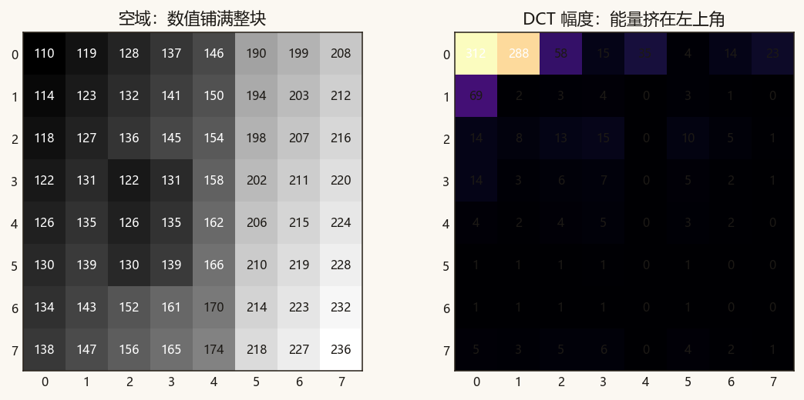
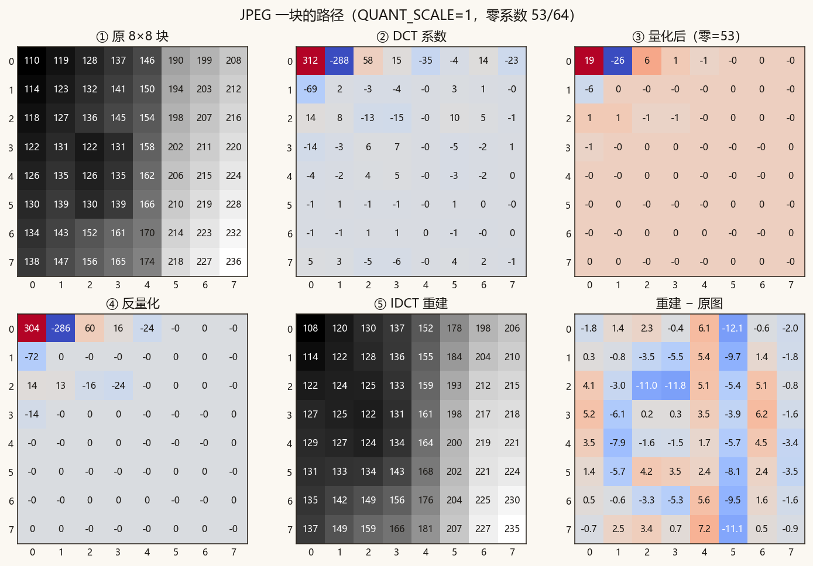
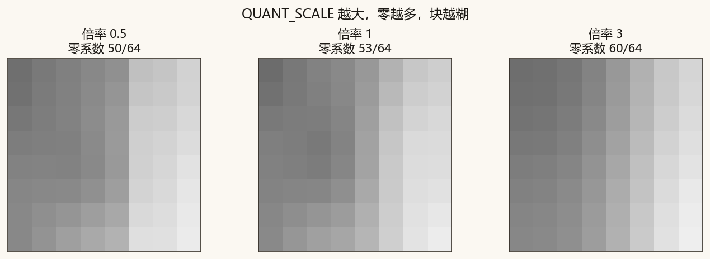
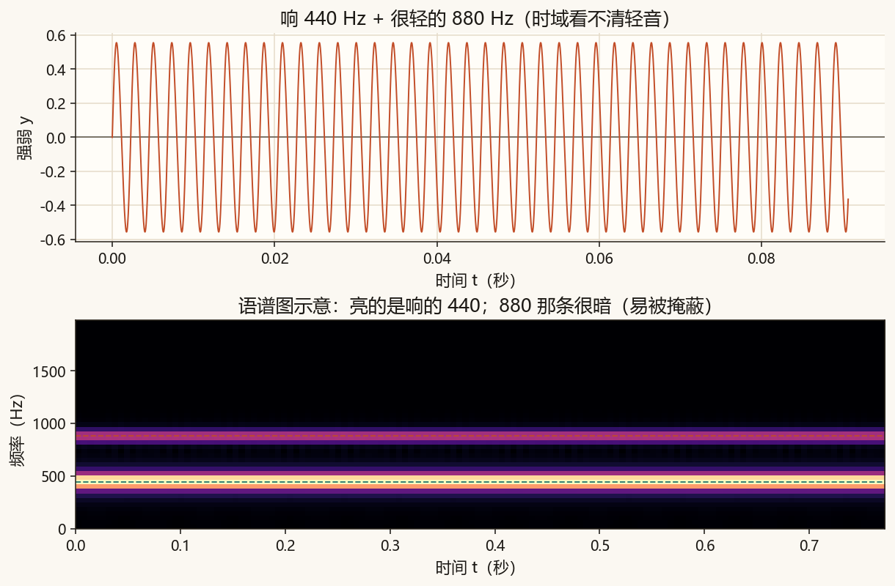
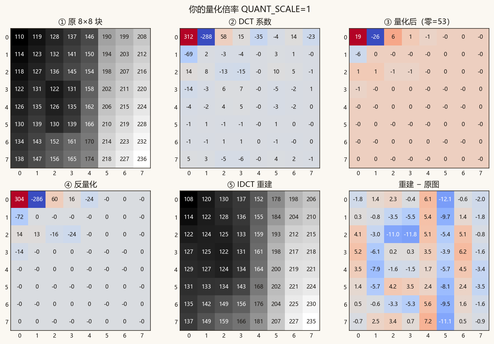

第 13 篇 · 压缩直觉 · 约 50 分钟
照片和声音直接存每个采样，文件很大。换成频率系数之后，许多格子接近 0，扔掉也几乎看不出——JPEG、MP3、视频编码都吃这一套。这一篇用 8×8 的 DCT 走通 JPEG 的核心一步，并点到听觉掩蔽与「只存差别」。
自然图像里，相邻像素往往差不多。空域看起来「每个格子都重要」；换成频率之后，能量常常挤在低频（左上角），高频许多系数很小。把小的变成 0，再配合「一长串 0 很好编码」，体积就下来了。

DFT（前面篇章的傅里叶变换）用复指数，系数可以是复数；DCT（离散余弦变换）只用余弦，系数是实数，并且特别擅长把「一块图像」的能量推进左上角。JPEG 选 DCT，不是因为 DFT 不能用，而是 DCT 对图像块更省事、更贴合后面的量化表。
彩色 JPEG 还有色彩转换等步骤。核心的「有损」发生在每个 8×8 亮度块上：
像素 → DCT → ÷Q 并取整 → ×Q → IDCT → 近似像素

QUANT_SCALE = 1（约中等质量）。注意量化后有多少格是 0；重建和原块很像，右边是逐格误差。零越多，后面编码越省。代价是重建有误差——压得越狠，块效应、模糊越明显。
量化表乘一个倍率 QUANT_SCALE：倍率越大，步长越大，四舍五入后零越多，文件越小，也越糊。

声音压缩也爱频域，但多了一层听觉：很大声的音会掩蔽旁边较弱的音——耳朵听不清的细节，编码器可以少分配比特，甚至丢掉。
脚本合成「响的 440 Hz + 很轻的 880 Hz」。时域上几乎只看见响音；语谱图上 880 那条很暗。真正的 MP3 有复杂的心理声学模型，这里只建立直觉，不实现模型。

对照听（轻音单独一段被放大，方便听清它本来存在）：
混合（响 + 轻）：
只有轻音（放大后）：
视频若每一帧都当一张 JPEG 存，会浪费：相邻帧往往几乎一样。编码器会估计块往哪边挪了（运动），然后主要编码残差（本帧 − 预测）。残差更稀、更小，再送进和 JPEG 类似的变换+量化。
DCT 用 8×8 正交余弦矩阵左右乘，不另装科学库。脚本在 code/ch13_dct.py。
coeffs = C @ (block - 128) @ C.T # DCT
levels = np.round(coeffs / Q) # 量化
restored = C.T @ (levels * Q) @ C + 128 # 反量化 + IDCTpython code/ch13_dct.py终端应出现「自检通过」和零系数个数（例如约几十个 / 64）。课文图：ch13_energy.png、ch13_jpeg_path.png、ch13_quality.png、ch13_masking.png；音频在 assets/audio/ch13_*.wav。练习图是 ch13_my_block.png。
若终端中文是乱码，先执行 chcp 65001。
code/ch13_dct.py，把 QUANT_SCALE = 1.0 改成 0.4，运行。打开 ch13_my_block.png：零应变少，重建更贴原块。4.0 再跑：零应明显变多，块更糊，误差图更花。1.0。
QUANT_SCALE = 1.0 时你的整条路径图。看标题和「零=？」那一格。自然信号的能量常挤在较少的低频系数上，许多高频接近 0。变成 0 之后特别好编码，文件变小；代价是有损。
DCT 系数是实数，更适合把图像块能量推进左上角。顺序：DCT → 量化（出许多 0）→（存储）→ 反量化 → IDCT。
响音会掩蔽旁边的轻音，听不见的细节可以少存。视频用运动预测，主要编码帧间残差，再对残差做变换量化。
从一条正弦，到频谱、滤波、图像、视频时间轴，再到压缩为何爱频率——主线是同一件事：把信号换成「每种变化各有多少」，再决定留下谁。若要从头复习，回到 目录。